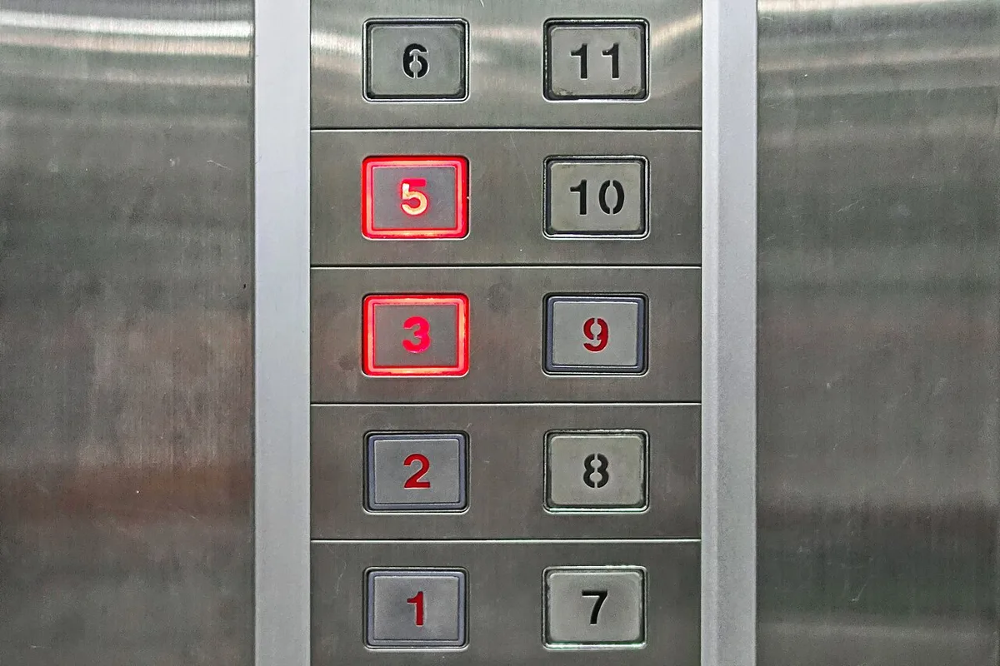
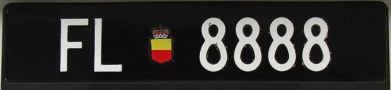
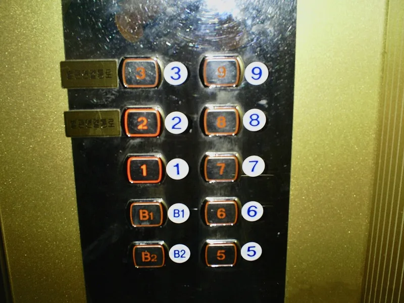

Culture Guide
Lucky and Unlucky Numbers in Chinese Culture: 8, 6, 9 and 4
In Chinese culture some numbers are welcomed and others avoided, mostly because of what they sound like. Here is why 8, 6, 9 and 2 are thought lucky, why 4 is often skipped, some famous real-world examples, and the lucky numbers our zodiac guides give each sign.

Why some numbers are lucky
Most Chinese beliefs about numbers come down to sound. When the name of a number sounds like a word with a good meaning, the number is considered lucky; when it sounds like a word with a bad meaning, people try to avoid it. Wikipedia's article on Chinese numerology lists these sound-alikes number by number.
Because Mandarin, Cantonese and other Chinese languages pronounce numbers differently, the same number can be lucky in one and unlucky in another. Four is the clearest case: it is often avoided, especially by Cantonese speakers, yet in Teochew culture it is considered very lucky.
So these are beliefs and customs, not rules, and families follow them to very different degrees.
8: the luckiest number
Eight is pronounced ba, which sounds like fa, a word meaning to prosper, as NPR explained in 2008. Wikipedia calls 8 “such an auspicious number” that numbers with several eights are thought especially lucky.
The most famous example is the 2008 Beijing Olympics. The opening ceremony began at 8:08 pm on 8 August 2008, or 8/8/08. NPR reported a jump in marriage-licence applications in Beijing from couples planning to marry that day, and that some mothers-to-be were hoping to give birth on it.
Eights can be worth real money. In 2003 Sichuan Airlines paid 2.33 million yuan, about US$280,000, for the phone number +86 28 8888 8888, Wikipedia records. Some menus even use prices such as 58 or 88 instead of prices ending in 9.

6, 9 and 2: smooth, lasting and in pairs
Three more numbers are generally welcome:
- 6 (liu) sounds like the Mandarin word for “smooth”, so it is seen as good for business. In Cantonese it sounds like the words for good fortune and happiness.
- 9 (jiu) sounds like the word for “long-lasting”, which makes it popular at weddings. It was also historically linked with the emperor.
- 2 (er or liang) is usually seen as good, because “good things come in pairs”.
Other numbers are mixed. Three sounds like the word for “life” but also like “to separate”, and seven has both good and bad associations; one of the bad ones is that the seventh month is the “ghost month”.
4: the number many people avoid
Four is pronounced si, almost the same as the word for “death”, especially in Cantonese. Avoiding it even has a name, tetraphobia, which Wikipedia describes as a superstition most common in East Asian countries.
It shows most clearly in buildings. Many buildings in Hong Kong skip the 4th floor and other floors containing a 4, and some apartment towers there skip every floor from 40 to 49. The developers of one Hong Kong tower, 39 Conduit Road, went further and numbered its top floor 88, Wikipedia notes. In South Korea, floor or room number 4 is almost always skipped in hospitals and funeral halls, and in other buildings the lift button for the fourth floor is sometimes labelled “F” instead of “4”. In Malaysia, floor 4 or house numbers with a 4 are occasionally skipped.
The numbers 14 and 24 are considered even unluckier than 4 in Cantonese; 24 sounds like “easy to die”. Companies take note too: the phone maker OnePlus went from its 3 and 3T straight to the 5, and Singapore's SBS Transit has left out some bus number plates ending in 4.

Lucky number combinations
Longer numbers are often read digit by digit, so they can spell out whole phrases. A few well-known examples from Wikipedia:
- 168 sounds like “fortune all the way”.
- 518 sounds like “I am going to prosper”.
- 520 sounds like “I love you”.
- 1314 sounds like “one life, one lifetime”, meaning forever, and 5201314 like “I love you for a lifetime”.
- 28 in Cantonese sounds like “easy to prosper”.
The same trick can work against a number, which is why some people avoid combinations such as 514, which sounds like “I want to die” in Mandarin.
Lucky numbers for each zodiac sign
Our zodiac guides also give each of the twelve signs its own traditional lucky numbers. Lists like these differ from one source to another; the table shows the ones used across MyBirthSign, for example on the Year of the Rat page and in the zodiac checker.
| Sign | Lucky numbers |
|---|---|
| Rat | 2, 3 |
| Ox | 1, 4 |
| Tiger | 1, 3, 4 |
| Rabbit | 3, 4, 6 |
| Dragon | 1, 6, 7 |
| Snake | 2, 8, 9 |
| Horse | 2, 3, 7 |
| Goat | 2, 7 |
| Monkey | 4, 9 |
| Rooster | 5, 7, 8 |
| Dog | 3, 4, 9 |
| Pig | 2, 5, 8 |
These sign lists do not always follow the sound-alike beliefs above. Four, for example, appears among the lucky numbers of the Ox, Tiger, Rabbit, Monkey and Dog, while 8 appears only for the Snake, Rooster and Pig.
Not sure of your sign? The zodiac year starts at Lunar New Year, not on 1 January, so our zodiac checker works it out from your full date of birth.
Daily lucky numbers, for fun only
Every day, our home page and daily fortune give each sign a lucky number for the day, chosen from its traditional numbers, together with longer lucky numbers of two to five digits that start with one of them. The numbers are the same for everyone with that sign on that day, by the date in Cambodia.
Please treat them as entertainment. They are not predictions and not betting advice, and they should never be used to pick lottery numbers or to make decisions about money. The same goes for every belief in this article: lucky numbers are part of culture and tradition, not a promise of luck.
Frequently asked questions
What is the luckiest number in Chinese culture?
Eight is usually considered the luckiest, because ba (eight) sounds like fa, “to prosper”. Numbers with several eights, such as 88 or 8888, are thought especially lucky.
Why is 4 considered unlucky?
Because si (four) sounds almost like the word for “death”, especially in Cantonese. That is why some buildings, mostly in East Asia, skip the 4th floor. Not everyone shares the belief: in Teochew culture, 4 is considered very lucky.
Why did the Beijing Olympics open at 8:08 pm on 8 August 2008?
The date and time, 8:08 pm on 8/8/08, are the best-known example of the lucky number 8 in use: eight is linked with prosperity.
What are the lucky numbers for my zodiac sign?
In our guides: Rat 2, 3; Ox 1, 4; Tiger 1, 3, 4; Rabbit 3, 4, 6; Dragon 1, 6, 7; Snake 2, 8, 9; Horse 2, 3, 7; Goat 2, 7; Monkey 4, 9; Rooster 5, 7, 8; Dog 3, 4, 9; Pig 2, 5, 8. Other sources may list different numbers.
Can lucky numbers help me win the lottery?
No. Lucky numbers are a cultural belief, and the daily lucky numbers on our site are for fun only. They are not predictions and not betting advice.
Sources and further reading
- Wikipedia: “Chinese numerology” — the sounds and meanings of 2, 3, 4, 6, 7, 8 and 9 in Mandarin and Cantonese, 4 in Teochew culture, the combinations 24, 28, 168, 514, 518, 520, 1314 and 5201314, the 2008 Olympics opening time, the 2003 Sichuan Airlines phone number, menu prices, floors skipped in Hong Kong and the top floor numbered 88 at 39 Conduit Road.
- Wikipedia: “Tetraphobia” — tetraphobia in East Asia, floors skipped in Hong Kong, South Korea and Malaysia, lifts that label the fourth floor “F”, 14 and 24 in Cantonese, OnePlus and the bus number plates of Singapore's SBS Transit.
- NPR: “8-8-08, A Lucky Day For Weddings” by Ki-Min Sung (7 August 2008) — 8 (ba) sounding like fa, prosperous; the 8:08 pm start of the Olympic opening ceremony; more marriage-licence applications in Beijing and planned births for 8 August 2008.
- MyBirthSign: Year of the Rat (one guide for each of the 12 signs) — the traditional lucky numbers used in our zodiac guides and checker, and the note that sources differ on these lists.
- MyBirthSign: Daily fortune — the daily lucky numbers of one to five digits for each sign, shown for fun only and not as predictions or betting advice.
Number beliefs follow the sources above and vary by family, region and language; nothing here is a prediction or betting advice. Photos are from Wikimedia Commons under the free licences named under each picture.
Explore more: Lucky colors for the Horse · Lucky days to open a business · Chinese zodiac years chart · What your zodiac sign says
← Back to the MyBirthSign Blogមគ្គុទ្ទេសក៍វប្បធម៌
លេខសំណាង និងលេខមិនសំណាង ក្នុងវប្បធម៌ចិន៖ លេខ 8, 6, 9 និង 4
ក្នុងវប្បធម៌ចិន លេខខ្លះត្រូវបានគេស្វាគមន៍ ហើយលេខខ្លះទៀតត្រូវបានគេជៀសវាង ភាគច្រើនដោយសារតែសំឡេងរបស់វា។ ខាងក្រោមនេះ ជាការពន្យល់ថា ហេតុអ្វីបានជាគេចាត់ទុកលេខ 8, 6, 9 និង 2 ថាជាលេខសំណាង ហេតុអ្វីបានជាលេខ 4 ច្រើនតែត្រូវបានរំលង ឧទាហរណ៍ល្បីៗមួយចំនួនក្នុងជីវិតពិត និងលេខសំណាងដែលមគ្គុទ្ទេសក៍រាសីរបស់យើងផ្ដល់ឱ្យរាសីនីមួយៗ។
ហេតុអ្វីបានជាលេខខ្លះជាលេខសំណាង
ជំនឿរបស់ចិនស្ដីពីលេខភាគច្រើន កើតចេញពីសំឡេង។ ពេលឈ្មោះនៃលេខមួយ មានសំឡេងដូចពាក្យដែលមានអត្ថន័យល្អ គេចាត់ទុកលេខនោះជាលេខសំណាង ហើយពេលវាមានសំឡេងដូចពាក្យដែលមានអត្ថន័យអាក្រក់ មនុស្សព្យាយាមជៀសវាងវា។ អត្ថបទស្ដីពីលេខសាស្ត្រចិន (Chinese numerology) របស់ Wikipedia រាយបញ្ជីពាក្យដែលមានសំឡេងដូចគ្នាទាំងនេះ តាមលេខនីមួយៗ។
ដោយសារភាសាចិនកុកងឺ (Mandarin) ភាសាកាតាំង (Cantonese) និងភាសាចិនផ្សេងទៀត បញ្ចេញសំឡេងលេខខុសៗគ្នា លេខតែមួយអាចជាលេខសំណាងក្នុងភាសាមួយ ហើយមិនសំណាងក្នុងភាសាមួយទៀត។ លេខ 4 ជាឧទាហរណ៍ច្បាស់ជាងគេ៖ គេច្រើនតែជៀសវាងវា ជាពិសេសអ្នកនិយាយភាសាកាតាំង ប៉ុន្តែក្នុងវប្បធម៌ចិនតេជីវ (Teochew) គេចាត់ទុកវាជាលេខសំណាងខ្លាំងណាស់។
ដូច្នេះ ទាំងនេះជាជំនឿ និងទំនៀមទម្លាប់ មិនមែនជាច្បាប់ទេ ហើយក្រុមគ្រួសារនីមួយៗ អនុវត្តតាមវាក្នុងកម្រិតខុសៗគ្នាខ្លាំង។
លេខ 8៖ លេខសំណាងបំផុត
លេខ 8 អានថា ba ដែលមានសំឡេងដូចពាក្យ fa មានន័យថា រីកចម្រើន ដូចដែល NPR បានពន្យល់កាលពីឆ្នាំ 2008។ Wikipedia ហៅលេខ 8 ថាជា «លេខមង្គលខ្លាំងណាស់» រហូតដល់លេខដែលមានលេខ 8 ច្រើនខ្ទង់ ត្រូវបានគេចាត់ទុកថាសំណាងជាពិសេស។
ឧទាហរណ៍ល្បីជាងគេ គឺព្រឹត្តិការណ៍អូឡាំពិកប៉េកាំងឆ្នាំ 2008។ ពិធីបើកបានចាប់ផ្ដើមនៅម៉ោង 20:08 ថ្ងៃទី 08/08/2008 ឬ 8/8/08។ NPR បានរាយការណ៍ថា នៅទីក្រុងប៉េកាំង ពាក្យស្នើសុំលិខិតអាពាហ៍ពិពាហ៍បានកើនឡើង ពីសំណាក់គូស្នេហ៍ដែលគ្រោងរៀបការនៅថ្ងៃនោះ ហើយស្ត្រីមានផ្ទៃពោះខ្លះ សង្ឃឹមថានឹងសម្រាលកូននៅថ្ងៃនោះដែរ។
លេខ 8 អាចមានតម្លៃជាប្រាក់ពិតៗ។ Wikipedia កត់ត្រាថា នៅឆ្នាំ 2003 ក្រុមហ៊ុនអាកាសចរណ៍ Sichuan Airlines បានចំណាយ 2.33 លានយ័ន ឬប្រហែល 280,000 ដុល្លារអាមេរិក ដើម្បីបានលេខទូរស័ព្ទ +86 28 8888 8888។ ម៉ឺនុយខ្លះថែមទាំងប្រើតម្លៃដូចជា 58 ឬ 88 ជំនួសឱ្យតម្លៃដែលបញ្ចប់ដោយលេខ 9។
លេខ 6, 9 និង 2៖ រលូន យូរអង្វែង និងជាគូ
លេខបីទៀត ជាទូទៅត្រូវបានគេស្វាគមន៍៖
- 6 (liu) មានសំឡេងដូចពាក្យ «រលូន» ក្នុងភាសាចិនកុកងឺ ដូច្នេះគេចាត់ទុកវាថាល្អសម្រាប់ការរកស៊ី។ ក្នុងភាសាកាតាំង វាមានសំឡេងដូចពាក្យដែលមានន័យថា សំណាងល្អ និងសុភមង្គល។
- 9 (jiu) មានសំឡេងដូចពាក្យ «យូរអង្វែង» ដែលធ្វើឱ្យវាពេញនិយមក្នុងពិធីមង្គលការ។ តាមប្រវត្តិសាស្ត្រ វាក៏ត្រូវបានភ្ជាប់ជាមួយព្រះចៅអធិរាជផងដែរ។
- 2 (er ឬ liang) ជាធម្មតាត្រូវបានចាត់ទុកថាល្អ ព្រោះ «របស់ល្អតែងមកជាគូ»។
លេខផ្សេងទៀតមានអត្ថន័យចម្រុះ។ លេខ 3 មានសំឡេងដូចពាក្យ «ជីវិត» ប៉ុន្តែក៏ដូចពាក្យ «បែកគ្នា» ដែរ ហើយលេខ 7 មានទាំងអត្ថន័យល្អ និងអាក្រក់ ដែលអត្ថន័យអាក្រក់មួយ គឺខែទីប្រាំពីរ ជា «ខែខ្មោច»។
លេខ 4៖ លេខដែលមនុស្សជាច្រើនជៀសវាង
លេខ 4 អានថា si ដែលស្ទើរតែដូចពាក្យ «ស្លាប់» ជាពិសេសក្នុងភាសាកាតាំង។ ការជៀសវាងលេខនេះ ថែមទាំងមានឈ្មោះផងដែរ គឺ tetraphobia (ការខ្លាចលេខ 4) ដែល Wikipedia ពិពណ៌នាថា ជាអបិយជំនឿដែលមានច្រើនជាងគេ នៅតាមប្រទេសអាស៊ីបូព៌ា។
វាឃើញច្បាស់ជាងគេនៅតាមអគារ។ អគារជាច្រើននៅហុងកុង រំលងជាន់ទី 4 និងជាន់ផ្សេងទៀតដែលមានលេខ 4 ហើយអគារអាផាតមិនខ្លះនៅទីនោះ រំលងគ្រប់ជាន់ពីទី 40 ដល់ទី 49។ អ្នកអភិវឌ្ឍន៍អគារមួយនៅហុងកុង គឺ 39 Conduit Road បានធ្វើលើសពីនេះទៀត ដោយដាក់លេខជាន់កំពូលរបស់វាថា 88 នេះបើតាម Wikipedia។ នៅកូរ៉េខាងត្បូង លេខជាន់ ឬលេខបន្ទប់ 4 ស្ទើរតែត្រូវបានរំលងជានិច្ច នៅក្នុងមន្ទីរពេទ្យ និងសាលបុណ្យសព ហើយនៅក្នុងអគារផ្សេងទៀត ប៊ូតុងជណ្ដើរយន្តសម្រាប់ជាន់ទី 4 ពេលខ្លះត្រូវបានដាក់ស្លាកថា «F» ជំនួសឱ្យ «4»។ នៅម៉ាឡេស៊ី លេខជាន់ 4 ឬលេខផ្ទះដែលមានលេខ 4 ពេលខ្លះត្រូវបានរំលង។
លេខ 14 និង 24 ត្រូវបានចាត់ទុកថាមិនសំណាងជាងលេខ 4 ទៅទៀត ក្នុងភាសាកាតាំង ដោយលេខ 24 មានសំឡេងដូច «ងាយស្លាប់»។ ក្រុមហ៊ុននានាក៏យកចិត្តទុកដាក់ដែរ៖ ក្រុមហ៊ុនផលិតទូរស័ព្ទ OnePlus បានរំលងពីម៉ូដែល 3 និង 3T ទៅម៉ូដែល 5 តែម្ដង ហើយក្រុមហ៊ុន SBS Transit របស់សិង្ហបុរី បានលុបចោលស្លាកលេខឡានក្រុងខ្លះ ដែលបញ្ចប់ដោយលេខ 4។
បន្សំលេខសំណាង
លេខវែងៗ ច្រើនតែត្រូវបានអានម្ដងមួយខ្ទង់ៗ ដូច្នេះវាអាចបង្កើតជាឃ្លាទាំងមូលបាន។ ខាងក្រោមនេះជាឧទាហរណ៍ល្បីៗមួយចំនួន ពី Wikipedia៖
- 168 មានសំឡេងដូច «សំណាងពេញមួយផ្លូវ»។
- 518 មានសំឡេងដូច «ខ្ញុំនឹងរីកចម្រើន»។
- 520 មានសំឡេងដូច «ខ្ញុំស្រលាញ់អ្នក»។
- 1314 មានសំឡេងដូច «មួយជីវិត មួយជាតិ» មានន័យថា ជារៀងរហូត ហើយ 5201314 មានសំឡេងដូច «ខ្ញុំស្រលាញ់អ្នកមួយជីវិត»។
- 28 ក្នុងភាសាកាតាំង មានសំឡេងដូច «ងាយរីកចម្រើន»។
វិធីដដែលនេះ ក៏អាចធ្វើឱ្យលេខមួយទៅជាអាក្រក់បានដែរ ហេតុនេះហើយបានជាមនុស្សខ្លះជៀសវាងបន្សំដូចជា 514 ដែលក្នុងភាសាចិនកុកងឺ មានសំឡេងដូច «ខ្ញុំចង់ស្លាប់»។
លេខសំណាងសម្រាប់រាសីនីមួយៗ
មគ្គុទ្ទេសក៍រាសីរបស់យើង ក៏ផ្ដល់ឱ្យរាសីទាំងដប់ពីរ នូវលេខសំណាងតាមប្រពៃណីរៀងៗខ្លួនដែរ។ បញ្ជីបែបនេះ ខុសគ្នាពីប្រភពមួយទៅប្រភពមួយ។ តារាងខាងក្រោមបង្ហាញលេខដែលប្រើនៅទូទាំង MyBirthSign ឧទាហរណ៍នៅលើទំព័រ ឆ្នាំជូត និងក្នុងកម្មវិធីពិនិត្យរាសី។
| រាសី | លេខសំណាង |
|---|---|
| ជូត | 2, 3 |
| ឆ្លូវ | 1, 4 |
| ខាល | 1, 3, 4 |
| ថោះ | 3, 4, 6 |
| រោង | 1, 6, 7 |
| ម្សាញ់ | 2, 8, 9 |
| មមី | 2, 3, 7 |
| មមែ | 2, 7 |
| វក | 4, 9 |
| រកា | 5, 7, 8 |
| ច | 3, 4, 9 |
| កុរ | 2, 5, 8 |
បញ្ជីរាសីទាំងនេះ មិនតែងតែស្របនឹងជំនឿផ្អែកលើសំឡេងខាងលើនោះទេ។ ឧទាហរណ៍ លេខ 4 មាននៅក្នុងលេខសំណាងរបស់ឆ្លូវ ខាល ថោះ វក និងច ខណៈដែលលេខ 8 មានតែសម្រាប់ម្សាញ់ រកា និងកុរប៉ុណ្ណោះ។
មិនប្រាកដពីរាសីរបស់អ្នកមែនទេ? ឆ្នាំរាសីចាប់ផ្ដើមនៅថ្ងៃចូលឆ្នាំចិន មិនមែននៅថ្ងៃទី 1 ខែមករាទេ ដូច្នេះ កម្មវិធីពិនិត្យរាសី របស់យើង គណនារាសីរបស់អ្នក ចេញពីថ្ងៃខែឆ្នាំកំណើតពេញលេញ។
លេខសំណាងប្រចាំថ្ងៃ សម្រាប់ការកម្សាន្តតែប៉ុណ្ណោះ
រៀងរាល់ថ្ងៃ ទំព័រដើម និង ជោគជតារាសីប្រចាំថ្ងៃ របស់យើង ផ្ដល់ឱ្យរាសីនីមួយៗនូវលេខសំណាងមួយសម្រាប់ថ្ងៃនោះ ដែលជ្រើសរើសចេញពីលេខសំណាងតាមប្រពៃណីរបស់វា ព្រមទាំងលេខសំណាងវែងជាងនេះ ពីពីរដល់ប្រាំខ្ទង់ ដែលចាប់ផ្ដើមដោយលេខមួយក្នុងចំណោមលេខទាំងនោះ។ លេខទាំងនេះដូចគ្នាសម្រាប់មនុស្សគ្រប់គ្នាដែលមានរាសីនោះ នៅថ្ងៃនោះ តាមកាលបរិច្ឆេទនៅកម្ពុជា។
សូមចាត់ទុកលេខទាំងនេះថាជា ការកម្សាន្ត។ វាមិនមែនជាការទស្សន៍ទាយ និងមិនមែនជាដំបូន្មានសម្រាប់ការភ្នាល់ទេ ហើយមិនគួរប្រើដើម្បីជ្រើសរើសលេខឆ្នោត ឬដើម្បីសម្រេចចិត្តលើរឿងលុយកាក់ឡើយ។ ជំនឿទាំងអស់ក្នុងអត្ថបទនេះក៏ដូចគ្នាដែរ៖ លេខសំណាងជាផ្នែកមួយនៃវប្បធម៌ និងប្រពៃណី មិនមែនជាការសន្យាថានឹងមានសំណាងនោះទេ។
សំណួរដែលគេសួរញឹកញាប់
តើលេខណាជាលេខសំណាងបំផុតក្នុងវប្បធម៌ចិន?
ជាធម្មតា លេខ 8 ត្រូវបានចាត់ទុកថាសំណាងបំផុត ព្រោះ ba (ប្រាំបី) មានសំឡេងដូច fa «រីកចម្រើន»។ លេខដែលមានលេខ 8 ច្រើនខ្ទង់ ដូចជា 88 ឬ 8888 ត្រូវបានគេចាត់ទុកថាសំណាងជាពិសេស។
ហេតុអ្វីបានជាលេខ 4 ត្រូវបានចាត់ទុកថាមិនសំណាង?
ព្រោះ si (បួន) មានសំឡេងស្ទើរតែដូចពាក្យ «ស្លាប់» ជាពិសេសក្នុងភាសាកាតាំង។ ហេតុនេះហើយបានជាអគារខ្លះ ភាគច្រើននៅអាស៊ីបូព៌ា រំលងជាន់ទី 4។ មិនមែនគ្រប់គ្នាជឿដូច្នេះទេ៖ ក្នុងវប្បធម៌ចិនតេជីវ លេខ 4 ត្រូវបានចាត់ទុកថាសំណាងខ្លាំងណាស់។
ហេតុអ្វីបានជាព្រឹត្តិការណ៍អូឡាំពិកប៉េកាំង បើកនៅម៉ោង 20:08 ថ្ងៃទី 08/08/2008?
កាលបរិច្ឆេទ និងម៉ោងនេះ គឺម៉ោង 20:08 ថ្ងៃទី 8/8/08 ជាឧទាហរណ៍ល្បីជាងគេ នៃការប្រើលេខសំណាង 8៖ លេខប្រាំបីត្រូវបានភ្ជាប់ជាមួយភាពរីកចម្រើន។
តើលេខសំណាងនៃរាសីរបស់ខ្ញុំជាលេខអ្វី?
ក្នុងមគ្គុទ្ទេសក៍របស់យើង៖ ជូត 2, 3; ឆ្លូវ 1, 4; ខាល 1, 3, 4; ថោះ 3, 4, 6; រោង 1, 6, 7; ម្សាញ់ 2, 8, 9; មមី 2, 3, 7; មមែ 2, 7; វក 4, 9; រកា 5, 7, 8; ច 3, 4, 9; កុរ 2, 5, 8។ ប្រភពផ្សេងទៀតអាចរាយលេខខុសពីនេះ។
តើលេខសំណាងអាចជួយឱ្យខ្ញុំឈ្នះឆ្នោតបានទេ?
មិនបានទេ។ លេខសំណាងជាជំនឿវប្បធម៌ ហើយលេខសំណាងប្រចាំថ្ងៃនៅលើគេហទំព័ររបស់យើង គឺសម្រាប់ការកម្សាន្តតែប៉ុណ្ណោះ។ វាមិនមែនជាការទស្សន៍ទាយ និងមិនមែនជាដំបូន្មានសម្រាប់ការភ្នាល់ទេ។
ប្រភព និងឯកសារអានបន្ថែម
- Wikipedia: “Chinese numerology” — សំឡេង និងអត្ថន័យនៃលេខ 2, 3, 4, 6, 7, 8 និង 9 ក្នុងភាសាចិនកុកងឺ និងភាសាកាតាំង លេខ 4 ក្នុងវប្បធម៌ចិនតេជីវ បន្សំលេខ 24, 28, 168, 514, 518, 520, 1314 និង 5201314 ម៉ោងបើកព្រឹត្តិការណ៍អូឡាំពិកឆ្នាំ 2008 លេខទូរស័ព្ទរបស់ Sichuan Airlines ឆ្នាំ 2003 តម្លៃលើម៉ឺនុយ ជាន់ដែលត្រូវរំលងនៅហុងកុង និងជាន់កំពូលលេខ 88 នៅ 39 Conduit Road។
- Wikipedia: “Tetraphobia” — tetraphobia នៅអាស៊ីបូព៌ា ជាន់ដែលត្រូវរំលងនៅហុងកុង កូរ៉េខាងត្បូង និងម៉ាឡេស៊ី ប៊ូតុងជណ្ដើរយន្តដែលដាក់ស្លាកជាន់ទី 4 ថា «F» លេខ 14 និង 24 ក្នុងភាសាកាតាំង OnePlus និងស្លាកលេខឡានក្រុងរបស់ក្រុមហ៊ុន SBS Transit នៃសិង្ហបុរី។
- NPR: “8-8-08, A Lucky Day For Weddings” by Ki-Min Sung (7 August 2008) — លេខ 8 (ba) ដែលមានសំឡេងដូច fa «រីកចម្រើន» ម៉ោង 20:08 ដែលពិធីបើកអូឡាំពិកចាប់ផ្ដើម ការស្នើសុំលិខិតអាពាហ៍ពិពាហ៍ច្រើនឡើងនៅប៉េកាំង និងការគ្រោងសម្រាលកូននៅថ្ងៃទី 08/08/2008។
- MyBirthSign: Year of the Rat (one guide for each of the 12 signs) — លេខសំណាងតាមប្រពៃណី ដែលប្រើក្នុងមគ្គុទ្ទេសក៍រាសី និងកម្មវិធីពិនិត្យរាសីរបស់យើង និងការកត់សម្គាល់ថា ប្រភពផ្សេងៗមានបញ្ជីខុសគ្នា។
- MyBirthSign: Daily fortune — លេខសំណាងប្រចាំថ្ងៃ ពីមួយដល់ប្រាំខ្ទង់ សម្រាប់រាសីនីមួយៗ ដែលបង្ហាញសម្រាប់ការកម្សាន្តតែប៉ុណ្ណោះ មិនមែនជាការទស្សន៍ទាយ ឬដំបូន្មានសម្រាប់ការភ្នាល់ទេ។
ជំនឿអំពីលេខ អនុវត្តតាមប្រភពខាងលើ ហើយខុសគ្នាទៅតាមគ្រួសារ តំបន់ និងភាសា។ គ្មានអ្វីនៅទីនេះជាការទស្សន៍ទាយ ឬដំបូន្មានសម្រាប់ការភ្នាល់ទេ។ រូបថតមកពី Wikimedia Commons ក្រោមអាជ្ញាប័ណ្ណសេរី ដែលបានបញ្ជាក់នៅក្រោមរូបនីមួយៗ។
អានបន្ថែម៖ ពណ៌សំណាងសម្រាប់អ្នកកើតឆ្នាំមមី · ថ្ងៃសំណាងសម្រាប់បើកអាជីវកម្ម · តារាងឆ្នាំរាសីចិន · អ្វីដែលរាសីរបស់អ្នកប្រាប់
← ត្រឡប់ទៅប្លុក MyBirthSign